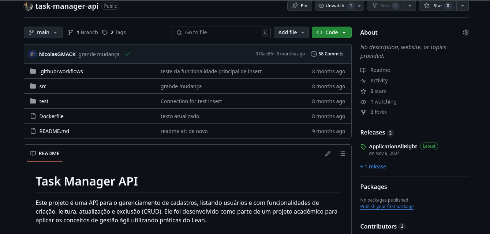
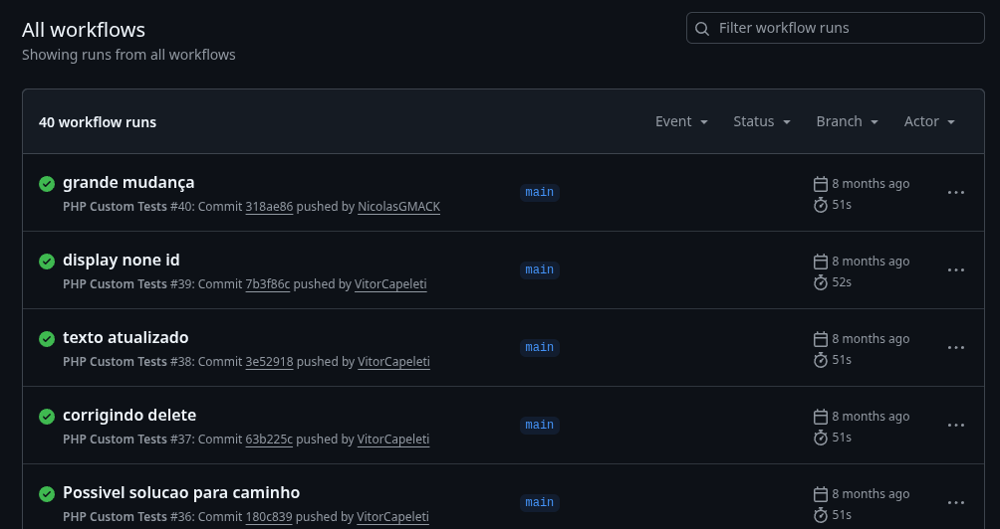
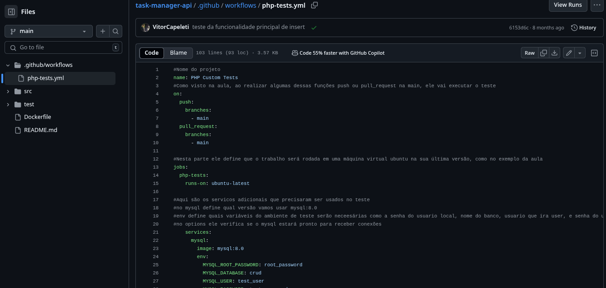

Finalidade do Projeto

Este projeto é uma API para o gerenciamento de cadastros, listando usuários e com funcionalidades de criação, leitura, atualização e exclusão (CRUD). Ele foi desenvolvido como parte de um projeto acadêmico para aplicar os conceitos de gestão ágil utilizando práticas do Lean.
Tecnologias Utilizadas

PHP: Linguagem de programação principal usada para criar a API. MySQL: Banco de dados para armazenar informações das tarefas. Bootstrap: Para estilização e componentes front-end simples. GitHub Projects e Issues: Ferramentas usadas para o gerenciamento do backlog. Kanban: Metodologia de organização com colunas.
Considerações Finais

Com o resultado final, desenvolvi minhas habilidades como programador, aplicando conceitos não só tecnológicos, mas também de gestão ágil, o que proporcionou um desenvolvimento veloz e eficiente, juntamente com os conceitos de CI/CD.